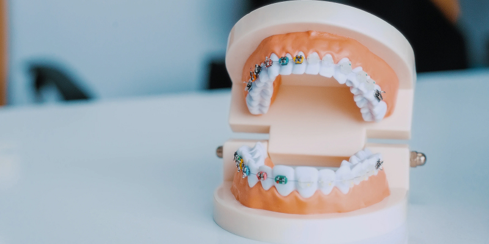
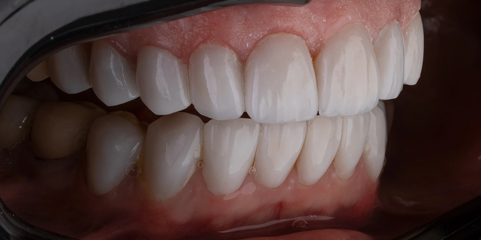

Отбеливание в стоматологии вредно или нет?
Здоровье или красота
Отбеливание зубов в стоматологии всегда вызывает множество сомнений и вопросов. Мы постарались в данной статье ответить на большинство из них. Наша клиника за безопасное лечение зубов и максимальное сохранение зубной эмали. Мы проводим процедуру щадящими системами «холодного» отбеливания с бережным воздействием на зубную эмаль. Но бывает, что у пациента до отбеливания высокая чувствительность зубов и тогда мы предупреждаем, что отбеливание на такие зубы может дать еще большую чувствительность. Процедура является абсолютно безопасной, но имеет ряд нюансов, которые стоит учитывать перед отбеливанием зубов.
С какими опасениями к нам приходят пациенты?

Отбеливание зубов пользуется популярностью у пациентов уже давно. За это время данная процедура потерпела некоторые изменения, стала более эффективной и безопасной. Несмотря на это, многие пациенты до сих пор опасаются отбеливания. Рассмотрим наиболее популярные страхи наших пациентов:
- Это болезненная процедура? Отбеливание зубов является щадящей процедурой. Боль в стоматологическом кресле может быть, если предварительно не выполнена санация полости рта, и гель нанесен на зубы со скрытыми кариозными полостями. Если во время процедуры вы испытываете боль, попросите прервать процедуру.
- После отбеливания зубы станут чувствительными? При использовании УФ-лампы чувствительность у зубов и правда может появиться. Особенно в первые 2 недели после процедуры. Если же проводить отбеливание с помощью LED-лампы, то чувствительность зубов будет гораздо ниже. В ином случае чувствительность зубов может быть повышена и без отбеливания, нужно понимать свои индивидуальные особенности.
- Может ли эмаль отбелиться неравномерно? Такой момент и правда возможен. Но при грамотном проведении процедуры такого дефекта не может быть. Перед отбеливанием обязательно убедитесь, что вам выполнили профессиональную чистку зубов и удалили зубной налет. В случае, если у вас установлены пломбы, реставрации или коронки, то цвет отбеленных зубов будет отличаться, так как гель воздействует только на живые ткани.
Когда отбеливание противопоказано

не рекомендуем отбеливание, если вы имеете:
- открытый кариес;
- пародонтит в стадии обострения;
- некариозные поражения эмали (клиновидный дефект, трещины и др.);
- прогрессирующий пульпит;
- разрушенные или поврежденные пломбы;
- повышенная чувствительность зубов.